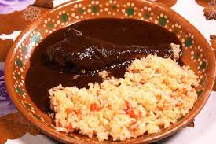
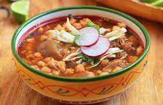
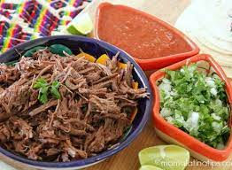
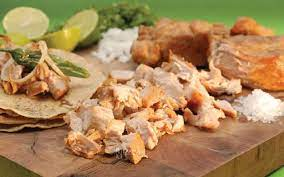

Document
¿Qué es la Gastronomia Méxicana
La gastronomía mexicana es el conjunto de platillos y técnicas culinarias de México que forman parte de las tradiciones y vida común de sus habitantes, enriquecida por las aportaciones de las distintas regiones del país, que deriva de la experiencia del México prehispánico con la cocina europea, entre otras.

La gastronomía mexicana tiene una variedad increíble de platillos recetas y sabores, y depende mucho de la región o del estado donde se preparen. En general, la comida mexicana reúne tradiciones gastronómicas indígenas y europeas, entre otras, y tiene una historia que se remonta aproximadamente a 10.000 años atrás. La base de la gastronomía mexicana es, sin duda, el maíz y el chile, los cuales datan de la época prehispánica. Otros componentes importantes incluyen el arroz, los frijoles, el jitomate, la cebolla, el nopal, la calabaza y el cacao. Algunos platos regionales que sobresalen como platillos típicos de la gastronomía mexicana incluyen la cochinita pibil del estado de Yucatán, el mole oaxaqueño, el mole poblano, el pozole (identificado con Sinaloa, Jalisco y Guerrero), el cabrito (identificado con Coahuila y Nuevo León) y el menudo de Sinaloa, Sonora y Chihuahua. Aunque se come carne roja en todo el país, se asocia más con los estados del norte y, por supuesto, se suele comer más pescado y mariscos en las zonas de la costa. Con toda esta diversidad, las tortillas, generalmente de maíz, acompañan a la mayoría de platillos mexicanos y forman la base de los famosos antojitos, que se refieren a las enchiladas, los tacos y las quesadillas. Una gran variedad de salsas rojas y verdes también suelen acompañar a las comidas típicas, y el uso del chile en general caracteriza a la gastronomía mexicana como picante y bien condimentada.
La comida Méxicana tiene una gran variedad y acontinuacion les presento algunos platillos:
1. El Mole 
La cocina es una recompensa para el paladar y en México si estás celebrando algo probablemente el plato principal en la mesa será un buen Mole. En nuestro país podrás encontrar una gran variedad de ellos, algunos llegan a ser tan sofisticados que pueden contener un sinfín de ingredientes de diferentes partes del mundo que al mezclarlos correctamente toman una identidad indudablemente mexicana. Es una salsa que está viva y de verdad al ponerlo en tu boca literalmente se vuelve una gran fiesta para el paladar.
2. El Pozole 
Para hablar de este delicioso guiso hay que remontarnos un poco en la historia ya que varios Frailes comenzaron a documentar su existencia. Fray Bernardino de Sahagún, escribió sobre el singular platillo en su monumental obra: Historia general de las cosas de la Nueva España. Podemos afirmar que lo escribió con repugnancia, ya que los antiguos mexicas preparaban el pozole con carne de los cautivos sacrificados en algunas fiestas, principalmente la dedicada a Nuestro Señor el Desollado, Xipe Totec. Dicho festejo llevaba el nombre de Tlacaxipehualiztli.
Hoy en día dicho platillo tiene una preparación diferente y más civilizada ya que en nuestros días se hace con carne de cerdo. En la actualidad el pozole ha sufrido cambios y diferencias asociadas con la región donde se prepara y consume. En el estado de Guerrero se prepara el blanco y el verde, mientras que en la Ciudad de México, Sinaloa, Nayarit y Jalisco se consume la variante roja.
3. Cochinita Pibil 
En México, la cocina, como el mapa, se divide en varias regiones. La gastronomía de cada una de ellas es muy distinta de la otra. La cocina de Yucatán es bastante particular. En primera, porque se desarrolló muy lejos de lo que sucedía al centro del país, y por la influencia que tuvieron los mayas. No es por nada que forma parte importante de las rutas gastronómicas y el platillo más conocido de esta zona es la cochinita pibil.
4. Chiles en Nogada 
Podríamos afirmar que este es uno de los platillos más representativos, bellos y deliciosos que podrás encontrar en nuestra gastronomía. Existen diferentes versiones acerca de su aparición, pero se sabe que este platillo data de 1821, año en el cual Agustín de Iturbide firmó el acta de los tratados de Córdoba. Algunos cuentan que fueron las madres agustinas del Convento de Santa Mónica en Puebla las que al saber que Don Agustín estaría en esa ciudad para celebrar su santo, el 28 de agosto, decidieron elaborar un platillo que recordara los colores de la bandera. Hoy en día es uno de los platillos principales que acompañan nuestras fiestas patrias.
5. Barbacoa 
La barbacoa es un método de cocción prehispánico que consistía en formar un hoyo en la tierra, calentarlo con brasas de leña y colocar piedras para cocinar a altas temperaturas. Sobre estas piedras se ponían las carnes que habían de cocerse envueltas en hojas de plátano o maguey dependiendo de la región; para finalizar su preparación las carnes se colocaban bajo tierra y se dejaban cocinar por largas horas. Hoy sin duda se ha vuelto una exquisitez y para algunos, un remedio delicioso y eficaz para la resaca.
6. Carnitas 
Los domingos, las carnitas conforman uno de los rituales más íntimos de la vida en México.
Es un paisaje cotidiano. Las personas llegan, se acercan, miran, van pidiendo y de alguna manera se acomodan, ya puede ser de pie o sentados, lo importante es encontrar un espacio suficiente como para alzar el codo. Aquí los dedos se llenan de grasa, también el bigote y, en un descuido, hasta la ropa; más allá del alimento, los tacos de carnitas son una actitud ante la vida.